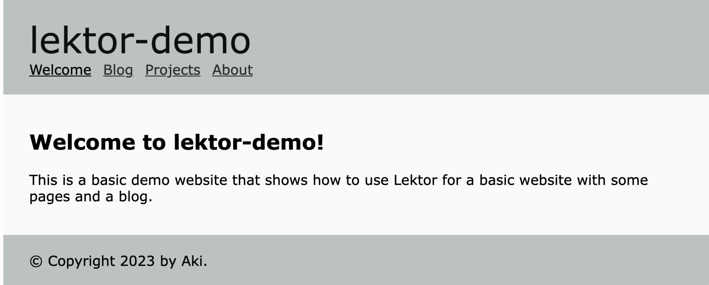

Quickstartが生成したスタイルシートを確認します。ミニマムな記述で、指定しているスタイルが少ないので、変更は全て別ファイルで上書きすることにします。
body {
font-family: 'Verdana', sans-serif;
margin: 50px 25px;
}
a {
color: #2a99b6;
}
a:hover {
color: #33bbdf;
}
header, footer, div.page {
width: 760px;
margin: 0 auto;
background: #daeef3;
padding: 20px 30px;
}
header h1 {
color: #169bbd;
margin: 0;
font-weight: normal;
font-size: 42px;
}
header nav ul {
list-style: none;
margin: 0;
padding: 0;
}
header nav ul li {
display: inline;
margin: 0 8px 0 0;
padding: 0;
}
div.page {
background: #f1fbfe;
}
デフォルトの配色は日本語のWebページと相性がよくありません。いったんグレイスケールの色を上書きします。
:root {
--gray-1: #f9faf9;
--gray-2: #dadedc;
--gray-3: #bcc2bf;
--gray-4: #9da6a2;
--gray-5: #7e8a85;
--gray-6: #626c68;
--gray-7: #464d4a;
--gray-8: #2a2e2d;
--gray-9: #0e100f;
/* monochrome */
--primarycolor: var(--gray-3);
--secondarycolor: var(--gray-9);
--linkcolor: var(--gray-8);
--hovercolor: var(--gray-6);
--page-backgroundcolor: var(--gray-1);
}
/* override colors */
a {
color: var(--linkcolor);
}
a:hover {
color: var(--hovercolor);
}
header, footer, div.page {
background: var(--primarycolor);
}
header h1 {
color: var(--secondarycolor);
}
div.page {
background: var(--page-backgroundcolor);
}
<meta charset="utf-8">
<link rel="stylesheet" href="{{ '/static/style.css'|url }}">
<link rel="stylesheet" href="{{ '/static/custom.css'|url }}">
